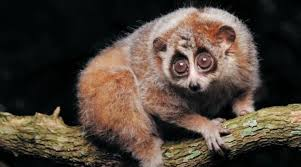
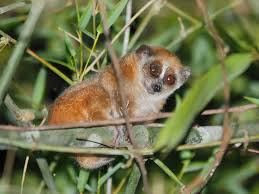
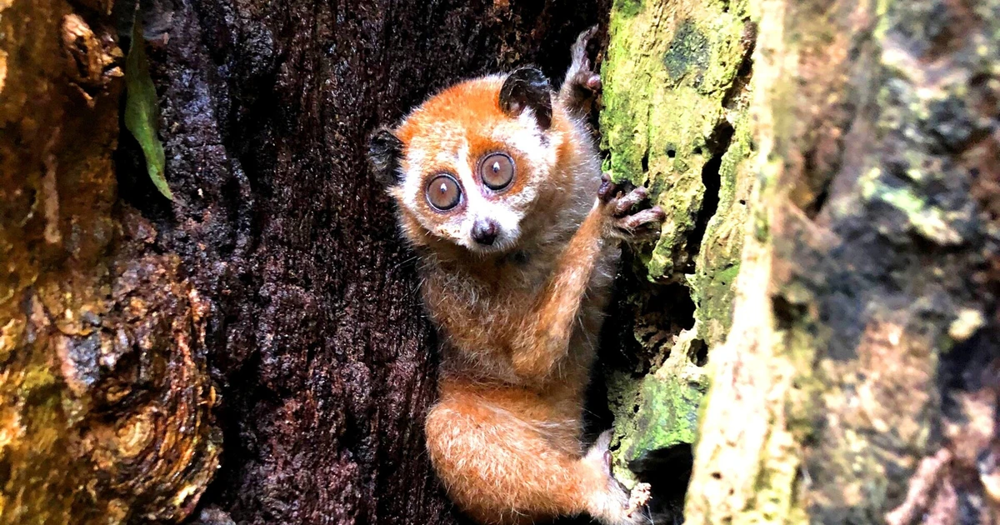
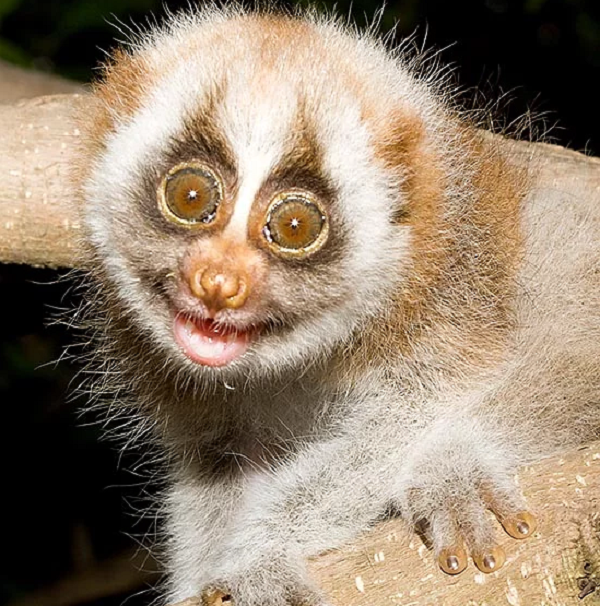
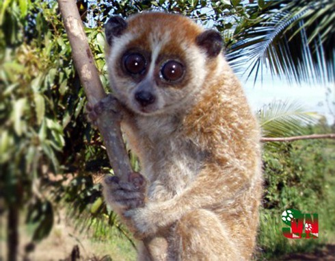
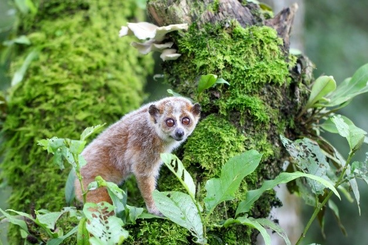

🦥 Cu li nhỏ (Xanthonycticebus pygmaeus) - Linh Trưởng Đáng Yêu
🧬 Tổng quan:
Tên khoa học: Xanthonycticebus pygmaeus
Tên gọi khác: Cu li lùn, Cu li lùn Đông Dương
Phân bố: Đông Nam Á, chủ yếu ở Việt Nam, Lào, Campuchia và miền Nam Trung Quốc.

📏 Kích thước và trọng lượng:
Chiều dài: Khoảng 18-21 cm
Trọng lượng: 300-600 gram

🍖 Chế độ ăn uống:
Thức ăn chính: Côn trùng, mật hoa, quả chín, lá cây và động vật nhỏ.

🏠 Môi trường sống:
Sống trong rừng nhiệt đới, rừng thường xanh và rừng tre nứa.

🔎 Đặc điểm nổi bật:
Kích thước nhỏ gọn, bộ lông mềm mại màu xám nâu và đôi mắt to tròn.
Chuyển động chậm chạp, có thể tiết ra chất độc từ tuyến nước bọt.

🛡️ Tình trạng bảo tồn:
IUCN: Loài Nguy Cấp (Endangered).
Mối đe dọa: Mất môi trường sống, săn bắt làm thú cưng và sử dụng trong y học cổ truyền.
Bảo tồn: Được bảo vệ trong các khu bảo tồn thiên nhiên và luật pháp nghiêm cấm buôn bán trái phép.

🌍 Vai trò trong hệ sinh thái:
Góp phần kiểm soát số lượng côn trùng và giúp phát tán hạt cây trong rừng.

Con khỉ gió (culi) cute =)))
Nơi này có Trung tâm Cứu hộ Linh trưởng, chuyên chăm sóc và bảo tồn các loài linh trưởng quý hiếm, trong đó có cu li nhỏ.
by: Thanh Đẹp Trai